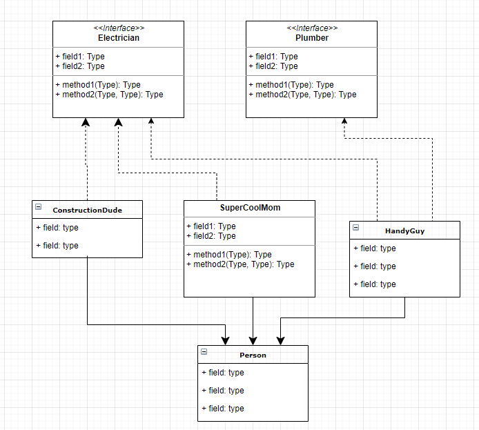

Intro to Interfaces#
Definition
Interface: A contract that promises a specific behavior.
Overview#
In this lesson you will…
Understand the difference between an interface and a class.
Create an interface and a class that makes a promise via the
implementskeyword.Get access to interface methods via casting (aka type casting).
Ask an object if it implements an interface via the
instanceofkeyword.Understand the
IS-Arelationship
Implements#
An interface is a list of methods that a class must implement.
An interface is very much like a class, but the methods don’t have an implementation.[1] Methods that don’t have an implementation are called abstract.
Example Interface#
public interface Electrician {
public abstract void installLights(int room);
public abstract void addCircuitBreaker();
public abstract void fixLightSwitch(int light);
public abstract double chargeOverpricedServiceFee();
}
Note that the above code makes use of the keywords public and abstract. In an interface, all the methods are required to be public and are implicitly declared as such. Furthermore, all the methods in an interface are implicitly declared as abstract. We could have left out those keywords as shown below.
// We leave out the implicit keywords, public abstract.
public interface Electrician {
void installLights(int room);
void addCircuitBreaker();
void fixLightSwitch(int light);
double chargeOverpricedServiceFee();
}
With the above code in its own file, Electrician.java, we can then create a class that implements the interface as follows.
public class HandyGuy extends Person implements Electrician {
// This class must provide code for all the methods belonging
// to the interface Electrician. The keyword `abstract` must now
// be omitted because we are implementing the methods.
public void installLights(int room) { /* code not shown */ }
public void addCircuitBreaker() { /* code not shown */ }
public void fixLightSwitch(int light) { /* code not shown */ }
public double chargeOverpricedServiceFee() { /* code not shown */ }
}
Note
interface: An interface is a promise or a contract.
When a class implements an interface, it is required to implement each method. [2] The class is effectively making a promise to behave like the interface.
Interfaces are analogous to the idea of roles or certifications:
“I’m certified as a Plumber. That means I can do all the things that you’d expect a plumber to do.”
“I’m certified as an Electrician. That means I can do all the things that you’d expected an electrician to do.”
Implements vs Extends#
The keyword implements is quite a bit different from extends. The former is a promise to implement the required behavior. The latter is shamelessly inheriting the behavior from its parent.
Implements:
🔹 An interface is a list of methods that a concrete class must implement.
🔹 Classes may implement many different interfaces.
🔹 All methods are public.
🔹 An interface has no state (no instance fields).
🔹 An interface gives you an is-a relationship.
🔹 Often times there is no code reuse.[3]
Extends:
🔹 Classes may have only one parent.
🔹 Child classes inherit methods.
🔹 Methods can be private, protected, public.
🔹 Classes may have instance fields.
🔹 Inheritance gives you an is-a relationship with lots of code-reuse.
Note
extends: Classes can extend only one class
implements: Classes can implement any number of interfaces
Why use an interface?#
An interface allows you to uniformly treat objects that have a different class hierarchy because they implement the a required interface. In other words, we can have a method that takes an interface as an argument. This does not restrict the class type of the object because any class can implement any interface. It allows us to circumvent the limitation of single inheritance; it allows for greater flexibility in design and extensibility.
Interfaces are very popular in the industry where there are many teams working on different components of a large system. The teams agree on interfaces and are free to implement however they want.
Interfaces allow completely new implementations to be plugged into an existing system. It is easier to maintain and extend.
Interfaces act as the TYPE of a function which opens up the ability to do Functional Programming. Interfaces allow an imperative[4] language the ability to offer some characteristics of a functional[5] programming language.
Interfaces are used to define Event Handlers or Callbacks that are used in GUI programming. Furthermore, functional interfaces[6] can be implemented with lambda expressions or inner anonymous classes which give us a good amount of flexibility and power.
Interfaces are used in Collection Classes, Streams, Unit Testing, parallel programming, and more!!
Multiple Implementations#
Below is code that shows how a class can both extend a class and implement two interfaces. Notice how we use the keyword implements only once. Furthermore, we are still allowed to extend from a parent class.
public class HandyGuy extends Person implements Electrician, Plumber {
// implement methods in Electrician
public void installLights(int room) { /* code not shown */ }
public void addCircuitBreaker() { /* code not shown */ }
public void fixLightSwitch(int switchNum) { /* code not shown */ }
public double chargeOverpricedServiceFee() { /* code not shown */ }
// implement methods in Plumber
public void installPressureReliefValve() { /* code not shown */ }
public void installDishwasher() { /* code not shown */ }
public void installFaucet() { /* code not shown */ }
public void fixLeak() { /* code not shown */ }
}
instanceof#
Let’s say that we have a program that wants to put various people to work. The method below putPersonToWork accepts any object that is-a Person. Perhaps this person has the certification to do the work of a Plumber or an Electrician. To determine this we need to ask the object p if it implements an interface using the keyword instanceof.
Below you’ll see how we use instanceof to determine if we can ask an identifier to behave as a Plumber. It is important to note that we must first cast p into a Plumber before using any of the Plumber behaviors. The compiler will attempt to protect the programmer from misusing a Person by not allowing a Person idenfier to call any methods it does implement or inherit. Without the cast at line 11, the compiler will fail at line 14 (error: cannot find symbol).
The nice thing about this code is that it will work with any Person object. If the person is a Plumber, it will do plumber work. It the person is an electrician, it will do electrician work. In either case, we know that we can get the person’s name.
Dot Operator
We can have idenfiers that references an interface or an instance of a class. In both cases, to invoke a method, we use the “dot operator”.
For example:
Below we have Person p. If we wanted the name of the person, we would get access to it using: p.getName(); Notice that the method getName is defined in the Person class.
We cast p into a Plumber (an interface) with Plumber joe = (Plumber) p. To call any of the interface’s methods, we similarly use the “dot operator”. For example: joe.fixLeak();
1public class Person {
2 public String getName() { return "Mr. Stride"; };
3}
4
5public class ConstructionSite {
6
7 public static void putPersonToWork(Person p) {
8 // ask the person if she can act like a Plumber
9 if (p instanceof Plumber) {
10 // get access to Plumber methods by casting to a Plumber type.
11 Plumber joe = (Plumber) p;
12
13 // Now that `joe` is-a Plumber, we can treat it as a Plumber
14 joe.fixLeak();
15 joe.installFaucet();
16 joe.installDishwasher();
17
18 System.out.printf("%s did Plumber work!\n", p.getName());
19 }
20
21 // ask the person if she can act like an Electrician
22 if (p instanceof Electrician) {
23 // get access to Electrician methods by casting to an Electrician type.
24 Electrician victor = (Electrician) p;
25
26 victor.addCircuitBreaker();
27 victor.fixLightSwitch(23);
28 victor.installLights(2);
29
30 System.out.printf("%s did Electrician work!\n", p.getName());
31 }
32 }
33}
Here is a quick summary of the instanceof keyword.
instanceof Syntax
object instanceof ClassName
object: the identifier you want to testClassName: the class or interface you want to test against
The expression returns a boolean. It returns true if object is an instance of ClassName.
Person person = new HandyGuy();
if (person instanceof Electrician) {
...
}
Abstraction & Extensibility#
Let’s say that you have written a method that will identify which Person should be nominated for an award. You might have a method prototype as follows:
public Person findWinner(ArrayList<Person> scientists) {
/* Code not shown */
}
This code works fine until one day you discover that you want to build your list as a LinkedList so that it can be faster with inserting new people on the fly. You’d then have to change your prototype to accept a LinkedList and potentially modify the API used within the method itself. However, the better way to write the code would be to use the interface List<T>.
public Person findWinner(List<Person> scientists) {
/* Code not shown */
}
Now the caller of the method can store the list in several different concrete classes that implement List such as: LinkedList, Stack or Vector. The following code works great:
public void demoUsage() {
List<Person> l1 = new ArrayList<Person>();
List<Person> l2 = new LinkedList<Person>();
List<Person> l3 = new Vector<Person>();
List<Person> l4 = new Stack<Person>();
/* populate each data structure with Person objects */
...
// Find the winner in each data structure
Person winner;
winner = findWinner(l1);
winner = findWinner(l2);
winner = findWinner(l3);
winner = findWinner(l4);
}
Interfaces in UML#
Interfaces are drawn in a UML class diagram similar to how classes are drawn, but with a few alterations.
The Interface box is decorated with
<<interface>>.We use dashed lines to represent the
implementsrelationship.

Implements vs Extends#
Let’s summarize the similarities and differences between the keywords.
|
|
|
|---|---|---|
Provides |
a promise |
inheritance |
Works with |
|
|
Code reuse? |
limited[1] |
Yes! |
Multiple? |
yes |
no |
Is-a relationship? |
yes |
yes |
has state |
No state |
Yes, may have state (fields) |
Type cast? |
Yes |
Yes |
Common Uses of Interfaces#
Interfaces are powerful and common. Below is a list of ways interfaces are used. You are not expected to understand all of these examples yet. You should be familiar with these by the end of the lessons in this chapter.
For Abstraction & Extensibility: Here we see a method that accepts a
List<Integer>instead of anArrayList<Integer>. This allows the caller to use a variety of datastructures so long as they implementList, an interface.
public int calculateSumtin(List<Integer> list) { }
Functional Programming: It is powerful to pass around functions as arguments or to have functions return functions.
Callbacks that handle Events is necessary and frequent in GUI Programming. This allows a program be be Event Driven, meaning that when the user of the application causes an event, code is triggered.
We can Customize functionality such as how a list is sorted. The next lesson dedicated to this activity.
We can enable iteration in a for-each loop.
Try-with-resources is built into Java and it allows a programmer to easily and safely close resources. We often do this when working with files so that we don’t need to call the
close()method. For example, the code below will create theScannerin a try-with-resources clause. Whether the file is found or not, we are guaranteed to close the Scanner object correctly. Any class that implementsAutoCloseablecan be used this way.
public void readFile(String filename) {
try (Scanner parser = new Scanner(new File(filename))) {
while (parser.hasNext()) {
System.out.println(parser.next());
}
} catch (FileNotFoundException ex) {
// Let the user know the file wasn't found
}
}
Streams are a powerful way to process data using functional programming. See future lessons on how to use Streams.
Footnotes#
[1] In reality, interfaces actually can, and often do, have implementation. An interface can have default and static methods, both of which are implemented. Methods that have no implementation are called abstract. Interfaces almost always have at least one abstract method, but this is not required. In this lesson, we introduce interfaces by saying that they have no implementation because this is a characteristic that helps us distinguish them from classes. However, confusingly enough, classes can also have abstract methods. It takes a seasoned developer to know when an abstract class is preferrable over an interface or vice versa.
[2] It is possible for a class to declare that it implements an interface and then, in reality, not implement all the methods. However, in this case, the class itself would be abstract. When a class is abstract, one cannot create an instance of that direct class. Instead, one must create a subclass that implements all the abstract (unimplemented) methods. For example:
public abstract class AbstractElectrician implements Electrician {
public void installLights(int room) { /* code not shown */ }
public void addCircuitBreaker() { /* code not shown */ }
public void fixLightSwitch(int light) { /* code not shown */ }
/* This class does NOT implement chargeOverpricedServiceFee
* and therefore cannot be instantiated. A subclass is required to
* to extend this class and implement the remaining abstract method */
}
public class ActualElectrician extends AbstractElectrician {
public double chargeOverpricedServiceFee() { /* code not shown */ }
/* Now that we've fully implemented all the abstract methods in the
* Electrician interface, this class can be instantiated. */
}
[3] interfaces have the ability to provide some code reuse by offering default or static methods.
[4] Imperative languages provide sequential instructions that describe how to accomplish something. They emphasize step-by-step execution where the program’s state changes as commands are executed. Java is an imperative programming language. Let’s contrast this with declarative programming languages which focus on what the program should accomplish rather than how to achieve it. CSS is a declarative lanaguage as it describes element styles, not the steps. Similarly, SQL will describe the data it wants to retrieve from the database, not how to retrieve it.
[5] Functional Languages have the key feature of allowing functions to be treated as values that can be passed as arguments or returned from other functions. Many languages, including Java, offer the ability to pass functions as an argument. A more academic and rigorous definition of a functional programming language is centralizing around the paradigm that treats computation as the evaluation of mathematical functions and avoids changing state or mutable data. It emphasizes immutability, first-class functions, and declarative programming. Functional Languages include F# and Ocaml.
[6] A Functional Interface is an interface that has only one abstract method. This means that only one method needs to be implemented. This allows for some nice shortcuts and syntactic sugar in implementation (to be seen in other lessons.)